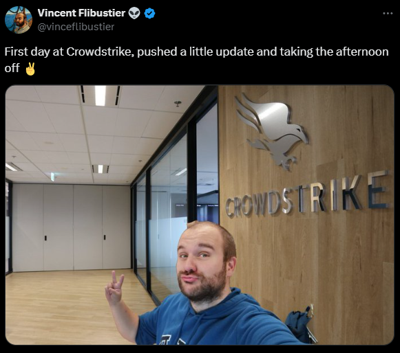
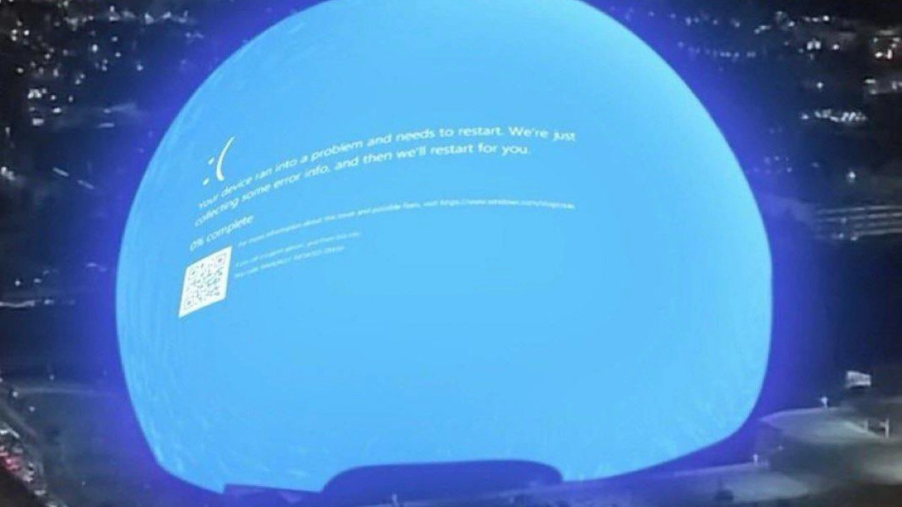
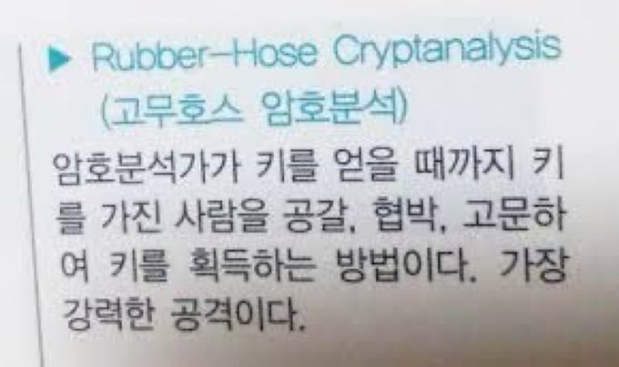

히스토리
2024년 크라우드 스트라이크 사태
크라우드스트라이크가 정리한 내용에 따르면 2024년 7월 19일 금요일 크라우드스트라이크는 윈도 기반 컴퓨터들에 설치되는 팔콘(Falcon) 플랫폼의 정기 업데이트를 진행했다고 한다. (보안뉴스, 크라우드스트라이크, IT 마비 사태 이후 첫 번째 보고서 발표 中)
작은 업데이트

영향도
아래 사진은 실제 CrowdStrike의 문제로써 발생했는지는 알 수 없지만 해당 사진의 장소는 라스베가스 '스피어'라는 돔이라고 한다 (link)

위키백과에서 주로 공항위주의 사례를 소개했는데 블루스크린의 영향은 매우 큰 것을 알 수 있다.
고무호스 암호분석
고무호스 암호분석의 시나리오를 알고 싶다면 Wikipedia의 Deniable encryption 문서를 참고하십시오.
